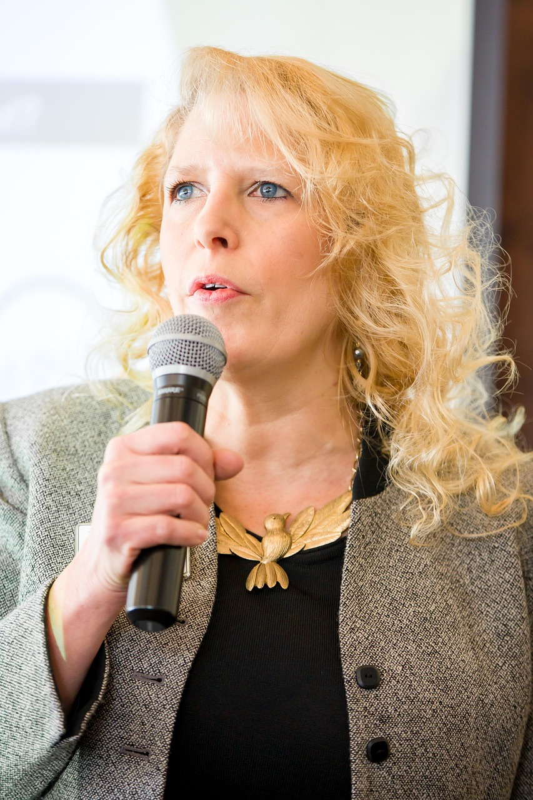

History

TechCon was founded in 2010 as a small gathering of technology enthusiasts
and professionals. Over the years, it has evolved into one of the leading
technology conferences globally, attracting innovators, entrepreneurs,
and experts from diverse fields.
The conference has continually expanded its scope,
embracing emerging technologies and fostering collaboration across industries.
Our Mission
The mission of TechCon is to inspire innovation, facilitate knowledge sharing,
and build a vibrant community of technology leaders and enthusiasts.
We aim to empower attendees with cutting-edge insights, foster meaningful connections,
and drive positive change through technology.
Past Speakers
Dr. Sarah Thompson
AI Researcher & Innovator:
Dr. Thompson has been a pioneer in artificial intelligence research,
contributing to advancements in machine learning algorithms that have transformed healthcare diagnostics.

Dr. Faith Yola
Founder of NextGen Robotics:
Dr. Faith Yola work in robotics has revolutionized automation in manufacturing, enhancing efficiency and safety on production lines worldwide.